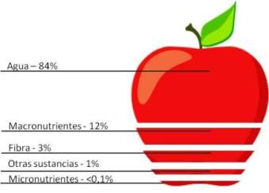

Es muy importante antes de empezar a aprender sobre los hábitos saludables y la alimentación, conocer el significado de algunas palabras que se detallan a continuación. Muchas veces hablamos de nutrición y alimentación como conceptos iguales, pero en realidad tienen significados distintos.
En la nutrición ocurren procesos como digestión, absorción y transporte de los nutrientes hacia todas las células y tejidos de nuestro cuerpo, por lo tanto intervienen otros aparatos, como digestivo, circulatorio, respiratorio y excretor. Por ejemplo, cuando ingerí la manzana, en todo mi aparato digestivo comienzan una serie de procesos que aseguran que cada componente de esa fruta se fragmente y se transforme en otras sustancias que nutrirán mis tejidos.
Si serán complejas e importantes estas funciones, que les cuento una curiosidad que seguro los va a asombrar. Si extendiéramos el intestino delgado, éste llegaría de un extremo a otro de la clase, ya que tiene por término medio, unos 6,5 metros. El intestino grueso solo tiene 1,5 metros.
A modo de facilitar el aprendizaje en estos capítulos, hablaremos de nutrición y alimentación como similares. Para lograr el mejor estado de salud y lograr mantener la misma, es muy importante conocer los alimentos y su composición, para de esta manera saber qué tipo de alimentación realizamos y qué aspectos de la misma podemos modificar para estar saludables.
¿Qué son los alimentos?
Los alimentos son sustancias naturales o industriales (sólidas o liquidas) que contienen uno o más elementos necesarios para la nutrición humana.
¿Sabías que el promedio de alimentos que un ser humano come en su vida es de 50 toneladas y 50.000 litros de bebidas?
¿Qué son los nutrientes?
Los nutrientes son sustancias químicas contenidas en los alimentos. Estos proporcionan la energía y los materiales de construcción para las innumerables sustancias que son esenciales para el crecimiento y la supervivencia de los organismos vivos. En pocas palabras: los nutrientes son diversas sustancias químicas que componen los alimentos.
Existen muchas maneras de clasificar los nutrientes. Nosotros vamos a clasificarlos en 2 tipos: macronutrientes y micronutrientes.

Como ejemplo, se muestran las cantidades relativas de macronutrientes, micronutrientes, agua y fibra que contiene una manzana sin pelar. Como se puede observar, el agua y los macronutrientes se presentan en mayores proporciones que el resto de los elementos.